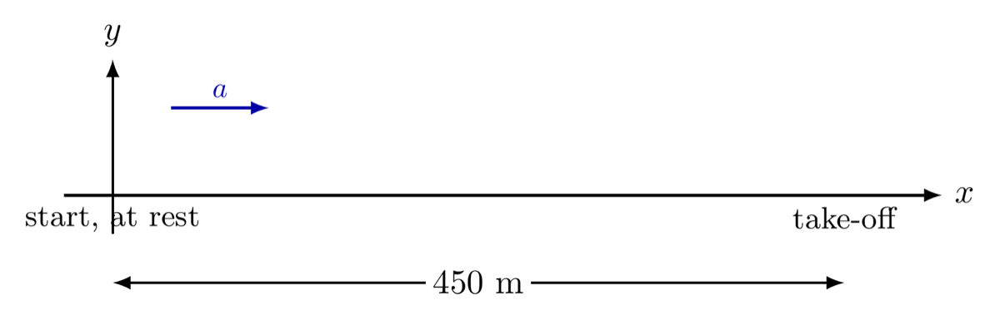
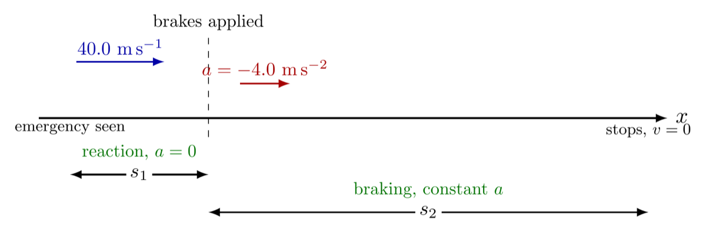

Lesson 3 built the equations of motion from real data. This class is about putting them to work on ordinary textbook problems, the way I actually expect an answer to be laid out.
Deriving the SUVAT equations in Lesson 3 was the easy part, in a sense, they came straight out of a curve fit on real data. Using them correctly on a textbook question is a different skill entirely, and it's the one exam questions actually test. This class works through a set of standard exercises from the textbook, but the point was never the specific numbers in any one problem. It was the method: how to read a question for what it actually tells you, how to notice what it doesn't say out loud but still expects you to know, and how to write an answer that shows that reasoning instead of just a final number.
Every one of these problems gets worked the same way, in the same order, regardless of what it's actually asking about:
A plane starts from rest and accelerates uniformly down a runway, covering 450 m before it takes off, 15.0 s after it began moving. Find its take-off velocity.

The explicit information is the runway distance and the time. "Starts from rest" is implicit for \(u\), the question never writes "\(u=0\)" in those words. The acceleration is never given and never asked for, so it doesn't belong in the list of knowns at all, it's simply absent from this problem:
| Quantity | Value | Source |
|---|---|---|
| \(s\) | 450 m | explicit |
| \(u\) | 0 | implicit — "from rest" |
| \(v\) | ? | target |
| \(a\) | — | not needed |
| \(t\) | 15.0 s | explicit |
With \(s\), \(u\), \(t\) known and \(v\) wanted, the equation that uses exactly those four quantities and nothing else is \(s = \tfrac{(u+v)}{2}t\). Both solving routes reach the same place:
Route A — substitute, then solve
\[450 = \frac{(0+v)}{2}(15.0)\]
\[v = 60\ \mathrm{m\,s^{-1}}\ \text{(solver)}\]
Route B — rearrange, then substitute once
\[v = \frac{2s}{t} - u = \frac{2(450)}{15.0} - 0 = 60\]
The two given values are 450 m and 15.0 s. Read strictly, 450 m carries 2 significant figures and 15.0 s carries 3, so the answer is limited to the smaller of the two:
\[v = 6.0 \times 10^{1}\ \mathrm{m\,s^{-1}}\]
A car travels at 40.0 m/s. The driver sees an emergency ahead and, 0.50 s later, brakes with a deceleration of 4.0 m/s². Find the total distance travelled before the car stops.

This one has more implicit information than explicit, which is exactly why it's worth doing slowly. The 0.50 s reaction time is a phase where the driver hasn't touched the brakes yet, so however fast the car was going stays constant, \(a=0\) for that interval, even though the question never says so. "The car stops" fixes \(v=0\) for the second phase, another value the question implies rather than states. And the velocity at the start of the braking phase is whatever the car was still doing at the end of the reaction phase, carried over, not re-given:
| Quantity | Phase 1 (reaction) | Phase 2 (braking) | Source |
|---|---|---|---|
| \(u\) | 40.0 m/s | 40.0 m/s | explicit, then carried over |
| \(v\) | 40.0 m/s | 0 | implicit — "stops" |
| \(a\) | 0 | −4.0 m/s² | implicit, then explicit |
| \(t\) | 0.50 s | — | explicit |
| \(s\) | ? | ? | target (each, then summed) |
Phase 1 has \(u\) and \(t\) with constant velocity, so \(s_1 = ut\). Phase 2 has \(u\), \(v\), and \(a\), with no time given, so \(v^2 = u^2 + 2as_2\) is the one that avoids needing \(t\) at all:
\[s_1 = (40.0)(0.50) = 20\ \mathrm{m}\]
\[0 = (40.0)^2 + 2(-4.0)s_2 \quad \Longrightarrow \quad s_2 = 2.0\times10^{2}\ \mathrm{m}\]
The total distance is the sum of both phases, \(s_1+s_2\). The least precise given values, 0.50 s and 4.0 m/s², both carry 2 significant figures, so the final answer is rounded to match:
\[s = 20 + 2.0\times10^{2} = 2.2\times10^{2}\ \mathrm{m}\]
Neither of these problems asked for anything beyond the four equations Lesson 3 already built. What actually separates a full-marks answer from a partial one is almost never the arithmetic, it's whether the implicit information got written down at all. "The car stops" and "starts from rest" are not the equations, they're the translation step before the equations, and it's the step most answers skip straight past. Writing it down explicitly, a frame of reference, then every known value labelled by where it actually came from, is what makes an answer checkable, by an exam marker or by the student rereading their own work a week later.